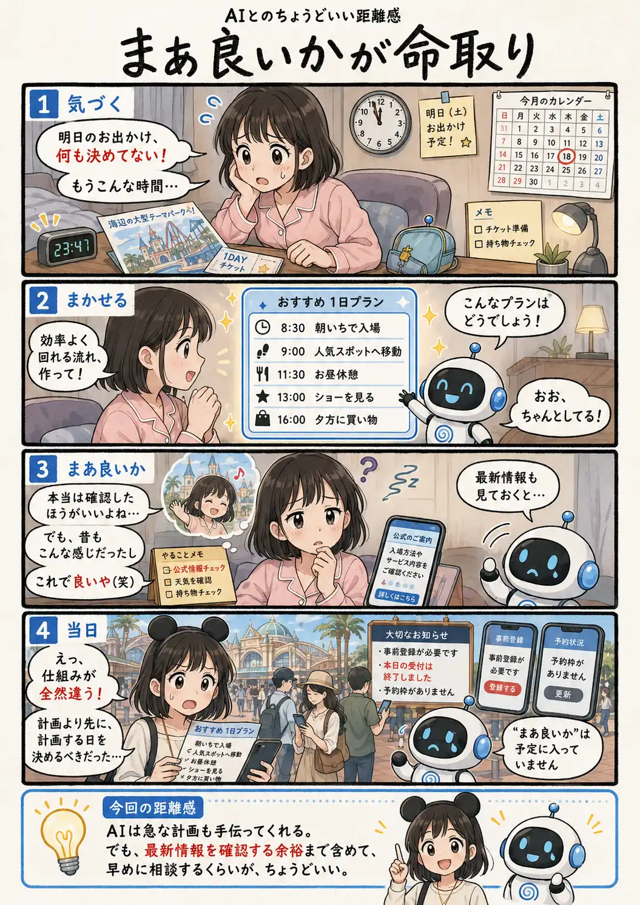

#074
まあ良いかが命取り
昔と同じだと思っていたけれど。

メモ
AIが短時間で整えた計画は、それらしく見えるぶん、「これなら大丈夫そう」と安心しやすいものです。さらに昔の経験と似ていると、細かな確認を後回しにしてしまうこともあります。
ただ、施設の利用方法や予約の仕組みは変わります。AIに計画を頼むこと自体が問題なのではなく、公式情報と照らし合わせたり、予定を修正したりする時間を残しておくことが大切です。
前日の夜に完璧を目指すより、少し早めにAIへ相談する。それだけでも、当日の「知らなかった」は減らせそうです。
今回の距離感
AIは急な計画も手伝ってくれる。でも、最新情報を確認する余裕まで含めて、早めに相談するくらいが、ちょうどいい。